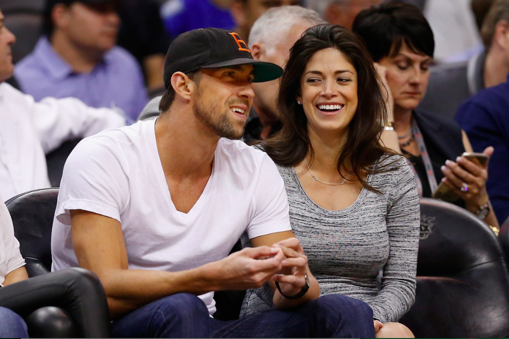

Biografia - Pessoal
Phelps nasceu e foi criado em Baltimore no estado de Maryland nos Estados Unidos da América,estudou na escola Rodgers Forge e se formou na Towson High School, em 2003. Seu pai, Fred Phelps, trabalha na Polícia do estado de Maryland e sua mãe, Debbie Davisson Phelps, é diretora de uma escola. Seus pais se divorciaram em 1994. Phelps tem duas irmãs mais velhas, Whitney e Hilary. As duas também são nadadoras.
Em sua juventude, foi diagnosticado que Michael Phelps tinha Transtorno do déficit de atenção com hiperatividade (TDAH). Ele começou a nadar aos sete anos de idade, partindo da influência das suas irmãs nadadoras. Ele se destacou como um excelente nadador, e quando tinha 10 anos de idade, ele quebrou o recorde nacional de natação para a idade dele. Enquanto crescia, Phelps ia quebrando recordes para sua idade e, aos 15 anos se classificou para as Olimpíadas de 2000, em Sydney.
Em Novembro de 2004, quando tinha 19 anos, Phelps foi preso por dirigir alcoolizado em Salisbury, Maryland. Phelps ganhou liberdade condicional até o julgamento, que foi considerado culpado com pena de 18 meses de serviços prestados à associação Mothers Against Drunk Driving ("Mães contra Alcoolizados no Volante"), e a pagar 250 dólares por mês, durante os 18 meses. Questionado sobre o incidente depois de um mês por Matt Lauer no programa de televisão Today Show, Phelps disse que foi um "incidente isolado" e disse: "definitivamente eu e minha família estamos abatidos… e acho que muitas pessoas do país também estão".
Entre 2004 e 2008, Phelps estudou na Universidade de Michigan, em Ann Arbor, Michigan, se formando em marketing esportivo e gerência.Em maio de 2016 nasceu o seu primeiro filho. Michael Phelps se casou em segredo com Nicole Johnson, a 13 de junho de 2016 em Paradise Valley, no Arizona, EUA.